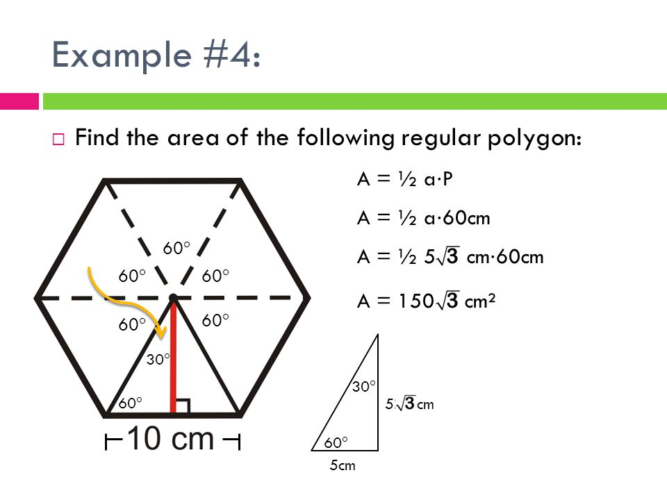

In this lab assignment you will practice:
Before you create objects in Java, you need to define a class. A class is a blueprint for the object.
class ClassName {
// instance variables
// constructors
// instance methods
}
We defined a class named Fan.
The class has two instance variables (variable defined inside class) on and speed and five methods isOn(), setOn(),getSpeed(),setSpeed(), and toString()method that delivers the data within the object . These variables and methods defined within a class are called members of the class.
class Fan {
//static Variables
public static int SLOW = 1;
public static int MEDIUM = 2;
public static int FAST = 3;
// instant variables
private int speed = SLOW;
private boolean on = false;
//Constructor
public Fan() {
}
// instant methods
public int getSpeed() {
return speed;
}
public void setSpeed(int newSpeed) {
speed = newSpeed;
}
public boolean isOn() {
return on;
}
public void setOn(boolean trueOrFalse) {
this.on = trueOrFalse;
}
public String toString() {
return "speed " + speed + "\n"
+ ((on) ? "fan is on" : " fan is off");
}
}// end of class Fan
Notice two keywords, private and public in the above program. These are access modifiers :
Access modifiers are keywords that set the accessibility (visibility) of class,variable, data member, method or constructor and their setters (updating value of a variable). They are also known as visibility modifier.
Using access modifiers forces better encapsulation to your code. Meaning, with encapsulation you can control what part of a program can access the members of a class. So that misuse of data can be prevented.
There are four access modifiers keywords in Java and they are:
| Modifier | Description |
|---|---|
| Private | Declarations are visible within the class only |
| Default | Declarations are visible only within the package (package private) |
| Protected | Declarations are visible within the package or and all sub classes |
| Public | Declarations are visible everywhere |
instantiate or create objects.This program creates two objects l1 and l2 of class Lamp.
class ClassObjectsExample {
public static void main(String[] args) {
Fan fan1 = new Fan();// create fan1 object of Fan class
Fan fan2 = new Fan();// create fan2 object of Fan class
System.out.println(fan1.toString());// displays the fan1 data
fan2.setSpeed(Fan.MEDIUM);// sets the speed of fan2 to Mediun
System.out.println(fan2.toString());// displays the fan2 data
}
}
CourseWrite a Course class that contains the following fields: RcourseNum, description, roomNum, and instructor. The class should provide at least the following methods:
String StudentWrite a simple class representing an student: the student class has 5 fields: StudentNum, name, lastName, major, and a gPA
String PolygonWrite a simple class representing a Polygon up to 6 sides: the Polygon class has 5 fields:
Regular, sides, sideLength, angle, apothem
Regular: true
sides: 3
sideLength: 1
angle : 60
apothem : SquareRoot(3)/2
There are several ways to find the area of a hexagon.
Completing all of the tasks in this lab should result in four separate Java files within a single package. Compress the package directory into a ZIP archive and upload it to the D2L Dropbox. Make sure the filename includes your name and lab number, for example Lab7-JohnSmith.zip. In addition, print out your code and hand in the physical copy at the beginning of the next lab session.
The marks for this lab are heavily weighted towards good coding practice and style. Pay attention to each of the points in the marking criteria below to ensure you get a good grade!
NOTE: This assignment is to be done individually. You can help one another with problems and questions, but in the end everyone must do their own assignment.
| Criteria | Marks |
|---|---|
| Correct Class design | 3 |
| Provided proper constructor, instant methods to access class members | 1 |
| Used encapsulation techniques to access the data. | 1 |
Well-scoped variables
- especially instance variable vs. static
|
1 |
| JavaDoc Comments and indentation | 2 |
| Provided a Tester class to create and test methods within classes | 1 |
| WOW factor | 1 |
| Total | 10 |